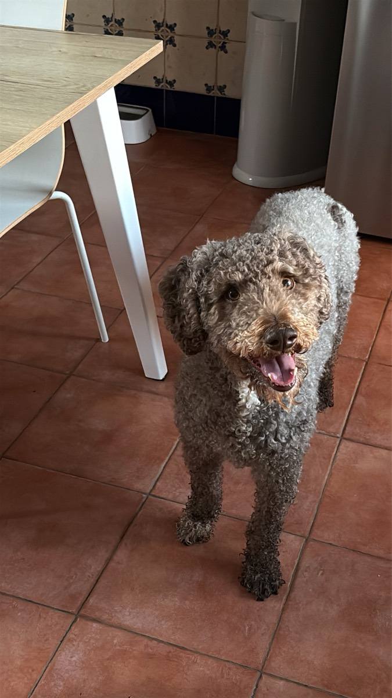
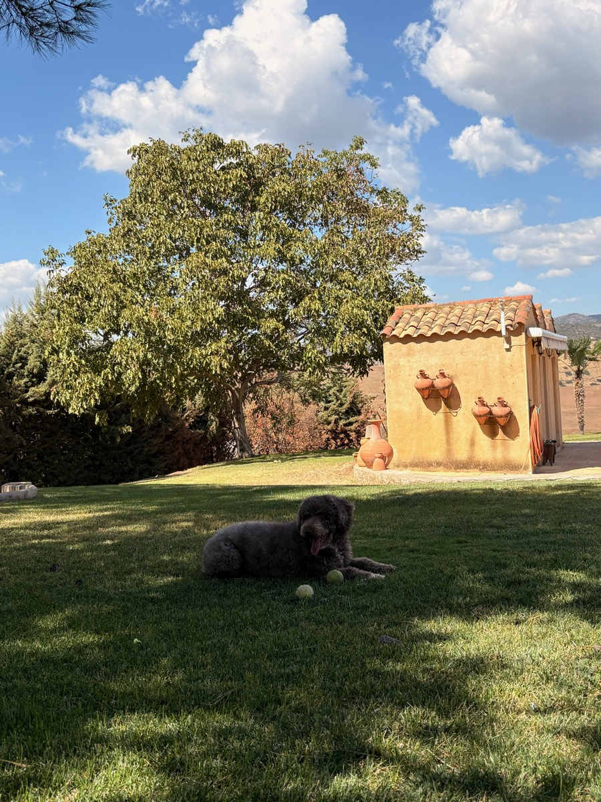

Viajar
Cambiar de aires, conocer sitios nuevos y volver con la cabeza llena de ideas.
Sobre nosotros
Lo nuestro empezó en La Carolina, en plena provincia de Jaén. Allí nos sacamos la titulación de Desarrollo de Aplicaciones Multiplataforma (DAM), que es donde aprendimos a programar de verdad: a entender un problema, a diseñar una solución y a ponerla en marcha de principio a fin.
Desde entonces hemos ido recogiendo experiencia trabajando en el sector, en proyectos reales y con clientes reales. Cada web, cada app y cada plataforma nos ha enseñado algo: a escuchar mejor, a escribir código más limpio y a cuidar los detalles que marcan la diferencia cuando alguien usa lo que has hecho.
Con todo ese bagaje nació Majosoft: un estudio pequeño desde el que diseñamos y programamos software a medida para negocios y proyectos que quieren crecer, sin perder el trato cercano de quien hace las cosas con sus propias manos.
Cómo trabajamos
Entendemos tu negocio y a tus usuarios, y prototipamos la experiencia en Figma antes de escribir una sola línea de código.
Desarrollamos con código limpio y entregas frecuentes que puedes ir viendo. Probamos sobre la marcha para que funcione desde el primer día.
Ponemos tu proyecto en producción y nos quedamos para medir, mantener y mejorar a medida que creces. Lo contamos entero en la página de inicio.
Más allá del código
Lo que nos recarga las pilas fuera del estudio.
Cambiar de aires, conocer sitios nuevos y volver con la cabeza llena de ideas.
Trabajo en equipo, jugadas pensadas y no rendirse hasta el último segundo. Como en el código.
Buenas historias y libros que enseñan algo nuevo: la mejor forma de seguir aprendiendo.
El equipo
Ningún proyecto sale del estudio sin su aprobación. Se encarga de subir la moral, supervisar las siestas y recordarnos que, de vez en cuando, toca levantarse de la silla.

★ Empleado del mes
Pausa para el balónCuéntanos qué necesitas y te respondemos sin compromiso.
Cuéntanos tu idea